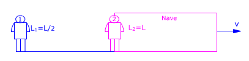
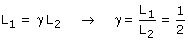
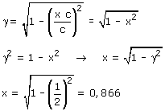
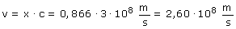

a)  Observador 1 (Tierra): Observador 2 (Nave): Aplicando la conversión de longitudes resulta:  Conociendo γ se puede calcular la velocidad de la nave) respecto al observador 1. Este cálculo resultará más fácil si expresamos la velocidad como un porcentaje de la velocidad de la luz: v =x·c  La velocidad de la nave es un 86.6% de la velocidad de la luz.  |